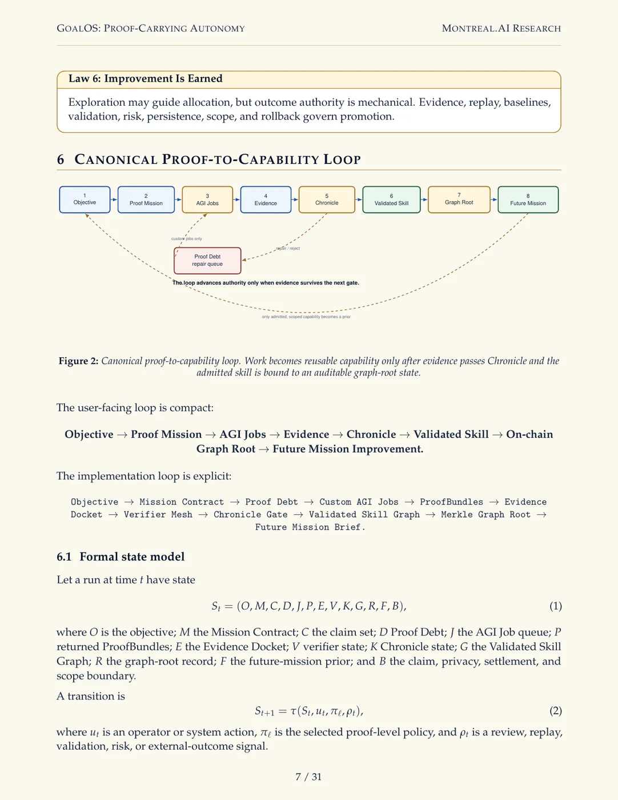
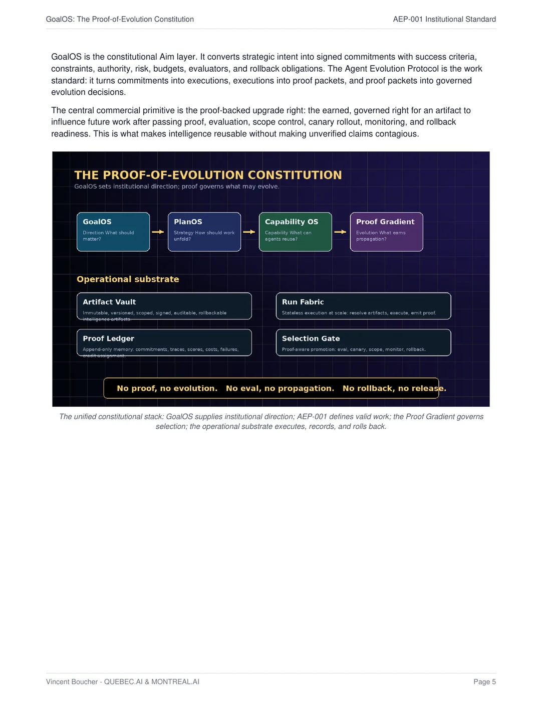
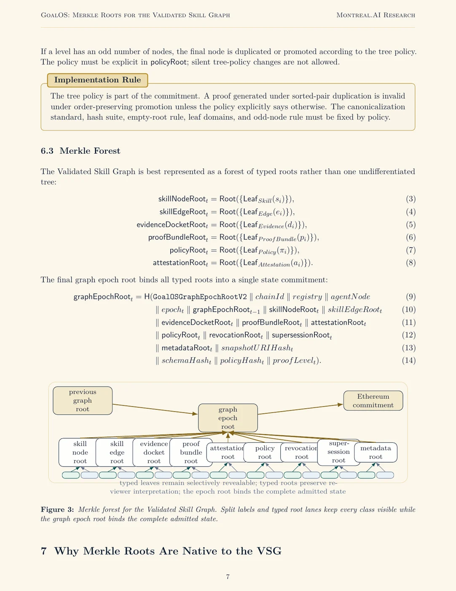
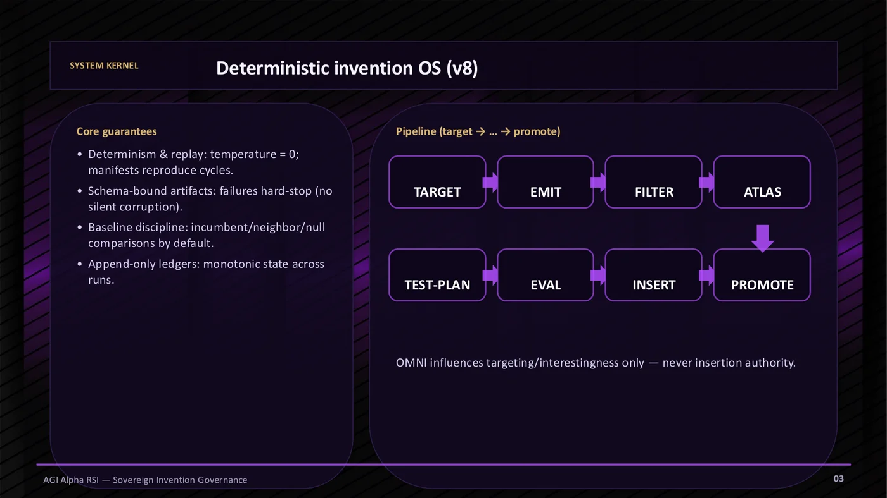

I
Boardroom Theatre
A cinematic 90-second entry and executive narrative for leaders who need the thesis before the machinery.
Launch theatre →A prestigious, boardroom-grade masterclass that lets partners see, operate, challenge, and design the GoalOS institution: mission architecture, dynamic AI deliberation, Evidence Dockets, Chronicle memory, recursive self-improvement, cryptographic proof state, bonded authority, and measurable second-mission lift.
Move seamlessly from executive theatre to a working Proof Mission. The same doctrine, different depth, zero hidden authority.
The previous masterclass explained GoalOS. The APEX edition lets a high-caliber partner inhabit it: boardroom narrative, mission execution, AI council deliberation, RSI governance, proof economics, diligence, and a real engagement design.
A cinematic 90-second entry and executive narrative for leaders who need the thesis before the machinery.
Launch theatre →Freeze one consequential objective, expose Proof Debt, generate custom proof work, and move toward a governed decision state.
Operate mission →Convene strategist, architect, reviewer, red team, validator, Chronicle, and RSI perspectives around the same objective.
Convene council →See how novelty, evidence contact, baselines, replay, stress, drift, canaries, and rollback govern recursive improvement.
Test improvement →Translate the institution into a founding engagement, contribution model, evidence scorecard, and 30-60-90 operating plan.
Design partnership →The experience is designed to end in a mission worth running—not admiration for an architecture.
Each module has a decision question, a mechanism, an exercise, and a concrete output. Use the checkboxes to track progress; the chosen mode filters the recommended path.
Open-ended work may be attempted. Authority is earned only when evidence survives the next gate. A failed gate returns the run to Proof Debt rather than contaminating memory.
The flagship deliverable is a Governed Decision State: claims, evidence, verification, risk, action, memory, and rollback.
Mission Contract, Proof Debt, AGI Jobs, ProofBundles, Evidence Docket, attestations, Chronicle decision, skill passport, and root packet.
Mission 1 creates a candidate capability. Mission 2 tests whether it improves fresh held-out work under equal constraints.
These visual standards are not decoration. They make the authority stack, memory firewall, Merkle commitment layer, and RSI governance legible to executive and technical audiences in the same room.




A partner should immediately recognize a decision they already own. Choose a scenario to preload the Proof Mission Studio, then sharpen it with the organization, reviewer, evidence, privacy, and rollback constraints that make it real.
Start empty. Freeze a mission. Turn unsupported claims into proof work. Produce an Evidence Docket, a Chronicle decision, a scoped capability, and a root-verifiable future-mission prior.
RSI is useful only when exploration and outcome authority remain separated. Simulate the deterministic invention loop, Evidence Contact Index, baseline discipline, Move-37 handling, persistence gates, drift control, and rollback.
Build domain-separated leaves, a sorted-pair Merkle tree, an inclusion proof, and a graph epoch root. Then change one character and watch the commitment fail.
This is a local, tokenless reference simulator. It teaches the control logic around budgets, bonds, validator independence, replay, challenge, settlement, and illustrative α-Work Units without asserting live token value, yield, liquidity, or Mainnet status.
GoalOS optimizes the shortest defensible path from uncertainty to action, not report length. Use the value model as a framing device—not as a claim of objective truth.
Illustrative mission-value index
The chart below is a synthetic regression fixture useful for engineering and teaching. It is not a public benchmark win, external field result, or proof of general intelligence.
Illustrates the pass criterion: a Chronicle-admitted skill should measurably improve fresh held-out work.
Tests whether governed, scoped capability outperforms simply feeding prior text back into the system.
Score the ingredients that determine whether a first mission will produce evidence rather than theatre. The output identifies the missing gate, not a vanity maturity level.
Choose the engagement architecture, contribution model, proof obligations, review route, and 30-60-90 path. The output is a partnership thesis with explicit gates—not a generic innovation memorandum.
Choose the partner archetype and GoalOS will generate the contribution model, first mission, governance boundary, scorecard, and 30-60-90 path.
The council is a deliberation surface—not an authority surface. It can decompose, critique, red-team, and draft. It cannot admit a skill, certify independence, authorize settlement, or establish truth.
Choose the perspectives that must be heard, then convene the council. Each member will state the decision lens, the main failure mode, the minimum proof request, and what must remain blocked.
The built-in coach is deterministic and offline. It answers from the GoalOS doctrine and the current lab state. An optional OpenAI-compatible endpoint can be configured in memory for live model assistance; no key is stored.
The quiz is deliberately practical. A partner who passes should be able to spot overclaim, design a proof mission, and explain why RSI requires more than self-generated text.
Complete the questions and score the masterclass.
80% or better, plus one concrete Proof Mission with a named reviewer and explicit claim boundary.
Explain the state machines, hard invariants, typed roots, replay path, challenge flow, and rollback conditions.
Show baseline advantage, executed evidence, deterministic replay, stress persistence, drift control, and gated promotion.
The APEX edition includes the clean-room reference run, COMP-001 regression pack, release manifest, Make-gate record, engineering report, and build Evidence Docket. These establish executable local evidence only.
Three supported-with-limits claims; three retired Proof Debt items; three deterministic bundles; explicit blocked claims; rollback on replay mismatch, tamper, scope failure, staleness, or successful challenge.
Validated median 90.31; fresh 73.39; raw memory 78.73; ungated rejected 64.63. Root divergence is preserved rather than falsified because the exact canonical byte preimage was unavailable.
The certificate is a local participation artifact, not professional accreditation or institutional authorization. It becomes meaningful only when paired with a scored mastery check and a named Proof Mission.
of Partner Organization has completed the GoalOS Partner MASTERCLASS and demonstrated practical understanding of proof-gated autonomous work, Evidence Dockets, Chronicle memory, governed recursive self-improvement, cryptographic commitment, and second-mission evaluation.
Named Proof Mission:
Design and review one bounded, evidence-producing GoalOS mission.
Local participation artifact · claim-bounded · no production authority conferred
Nominate one reviewer. Freeze one bounded mission. Produce one Evidence Docket. Admit only what survives Chronicle. Then test whether the resulting capability improves the next mission.